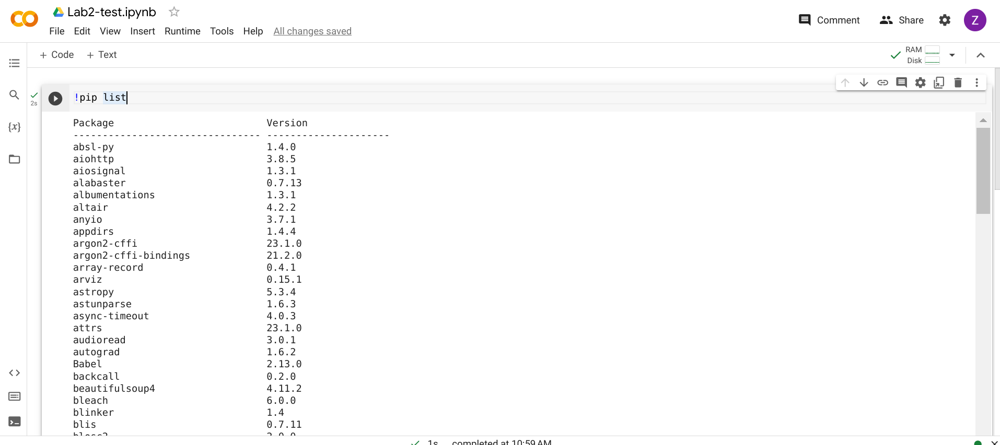
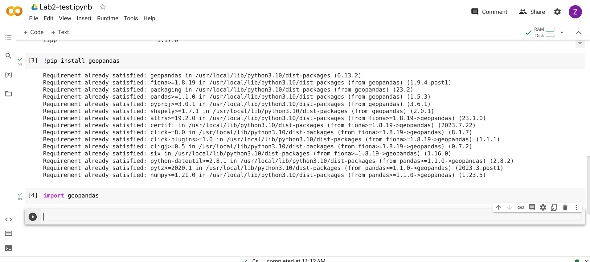
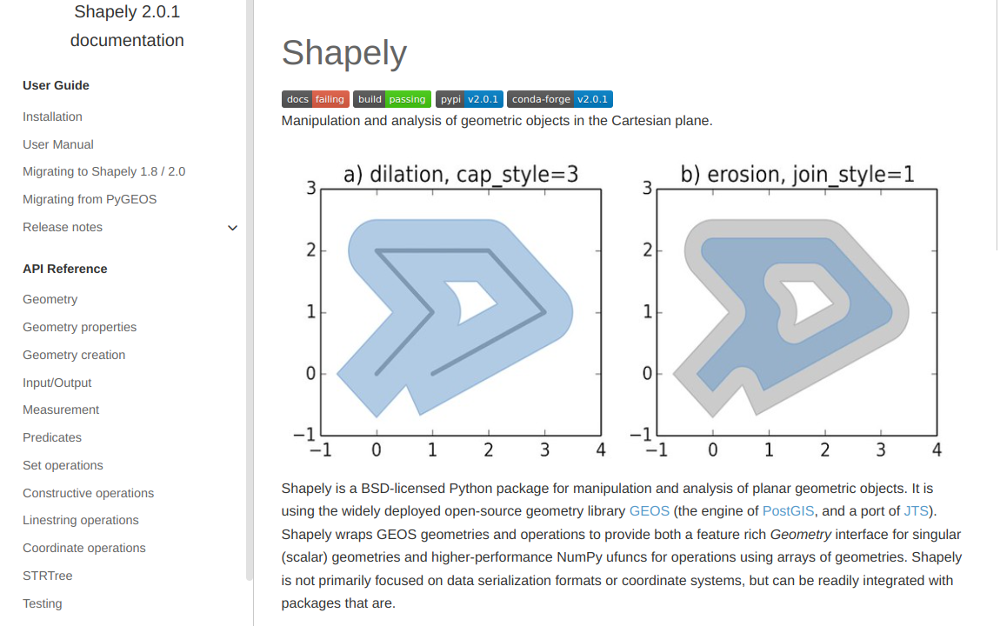
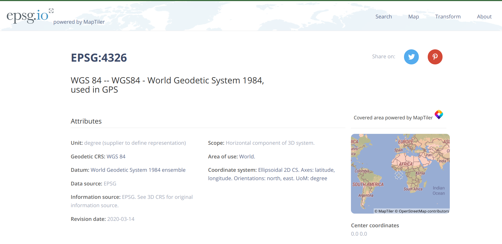

Lab 3 - Spatial Relations#
Th. 17.10.2024 15:00-17:00
1 - Calculate Spatial Relations and Plotting#
1.1 - Read Data#
import pandas as pd
import geopandas as gpd
import matplotlib.pyplot as plt
# read the same shapefile from lab 2
df_countries = gpd.read_file('ne_10m_admin_0_countries/ne_10m_admin_0_countries.shp')
df_countries.head()
| featurecla | scalerank | LABELRANK | SOVEREIGNT | SOV_A3 | ADM0_DIF | LEVEL | TYPE | TLC | ADMIN | ... | FCLASS_TR | FCLASS_ID | FCLASS_PL | FCLASS_GR | FCLASS_IT | FCLASS_NL | FCLASS_SE | FCLASS_BD | FCLASS_UA | geometry | |
|---|---|---|---|---|---|---|---|---|---|---|---|---|---|---|---|---|---|---|---|---|---|
| 0 | Admin-0 country | 0 | 2 | Indonesia | IDN | 0 | 2 | Sovereign country | 1 | Indonesia | ... | None | None | None | None | None | None | None | None | None | MULTIPOLYGON (((117.70361 4.16341, 117.70361 4... |
| 1 | Admin-0 country | 0 | 3 | Malaysia | MYS | 0 | 2 | Sovereign country | 1 | Malaysia | ... | None | None | None | None | None | None | None | None | None | MULTIPOLYGON (((117.70361 4.16341, 117.69711 4... |
| 2 | Admin-0 country | 0 | 2 | Chile | CHL | 0 | 2 | Sovereign country | 1 | Chile | ... | None | None | None | None | None | None | None | None | None | MULTIPOLYGON (((-69.51009 -17.50659, -69.50611... |
| 3 | Admin-0 country | 0 | 3 | Bolivia | BOL | 0 | 2 | Sovereign country | 1 | Bolivia | ... | None | None | None | None | None | None | None | None | None | POLYGON ((-69.51009 -17.50659, -69.51009 -17.5... |
| 4 | Admin-0 country | 0 | 2 | Peru | PER | 0 | 2 | Sovereign country | 1 | Peru | ... | None | None | None | None | None | None | None | None | None | MULTIPOLYGON (((-69.51009 -17.50659, -69.63832... |
5 rows × 169 columns
# check coordinate reference systems
df_countries.crs
<Geographic 2D CRS: EPSG:4326>
Name: WGS 84
Axis Info [ellipsoidal]:
- Lat[north]: Geodetic latitude (degree)
- Lon[east]: Geodetic longitude (degree)
Area of Use:
- name: World.
- bounds: (-180.0, -90.0, 180.0, 90.0)
Datum: World Geodetic System 1984 ensemble
- Ellipsoid: WGS 84
- Prime Meridian: Greenwich
# read point dataset of earthquakes catalogue(1970-2014) from Humanitarian Data Exchange
url = 'https://data.humdata.org/dataset/4881d82b-ba63-4515-b748-c364f3d05b42/resource/10ac8776-5141-494b-b3cd-bf7764b2f964/download/earthquakes1970-2014.csv'
earthquakes = pd.read_csv(url)
earthquakes.head()
| DateTime | Latitude | Longitude | Depth | Magnitude | MagType | NbStations | Gap | Distance | RMS | Source | EventID | |
|---|---|---|---|---|---|---|---|---|---|---|---|---|
| 0 | 1970/01/04 17:00:40.20 | 24.139 | 102.503 | 31.0 | 7.5 | Ms | 90.0 | NaN | NaN | 0.0 | NEI | 1.970010e+09 |
| 1 | 1970/01/06 05:35:51.80 | -9.628 | 151.458 | 8.0 | 6.2 | Ms | 85.0 | NaN | NaN | 0.0 | NEI | 1.970011e+09 |
| 2 | 1970/01/08 17:12:39.10 | -34.741 | 178.568 | 179.0 | 6.1 | Mb | 59.0 | NaN | NaN | 0.0 | NEI | 1.970011e+09 |
| 3 | 1970/01/10 12:07:08.60 | 6.825 | 126.737 | 73.0 | 6.1 | Mb | 91.0 | NaN | NaN | 0.0 | NEI | 1.970011e+09 |
| 4 | 1970/01/16 08:05:39.00 | 60.280 | -152.660 | 85.0 | 6.0 | ML | 0.0 | NaN | NaN | NaN | AK | NaN |
1.2 - Plot the earthquake dataset#
from shapely.geometry import Point
from geopandas import GeoDataFrame
# zip x and y coordinates into single feature
geometry = [Point(xy) for xy in zip(earthquakes['Longitude'], earthquakes['Latitude'])]
# create a GeoPandas dataframe
# designate coordinate system to be the same with countries dataframe
df_earthquakes = GeoDataFrame(earthquakes, crs=df_countries.crs, geometry=geometry)
# plot df_countries as base map
df_earthquakes.plot(ax=df_countries.plot(figsize=(12, 8)), marker='o', color='red', markersize=12);
1.3 - Spatial Joins between two GeoDataFrames#
A spatial join uses binary predicates such as intersects and crosses to combine two GeoDataFrames based on the spatial relationship between their geometries.
A common use case might be a spatial join between a point layer and a polygon layer where you want to retain the point geometries and grab the attributes of the intersecting polygons.
Types of spatial joins:
LEFT OUTER JOIN
(how="left"): keep all rows from the left and duplicate them if necessary to represent multiple hits between the two dataframes. Retaining the geometries of the left.RIGHT OUTER JOIN
(how="right"): keep all rows from the right and duplicate them if necessary to represent multiple hits between the two dataframes. Retaining the geometries of the right.INNER JOIN
(how="inner"): keep rows from the right and left only where their binary predicate is TRUE and lose all rows that do not. Retaining the geometries of the left.
More information on spatial joins can be found here.
# a left outer join for point earthquake data within the country polygon
join_left_df = df_earthquakes.sjoin(df_countries, how="left", predicate="within")
# get the row count of the dataframe after spatial join
len(join_left_df)
5304
You can use this to find out all unique country names in df_countries:
df_countries.SOVEREIGNT.unique()
# get all earthquakes happened in Japan for example
# you can change it to other countries here
country_of_interest = 'Japan'
country_earthquakes = join_left_df[join_left_df['SOVEREIGNT'] == country_of_interest]
# get the row count of country_earthquakes dataframe
len(country_earthquakes)
44
=======
Lab 2 - Spatial Data#
Th. 10.10.2024 15:00-17:00
1 - Troubleshooting#
1.1 - Google Colab: Alternative Choices of Using Jupyter Notebook#
Google Colab can serve as a backup plan in case conda on both your local and lab computers is not working.

You can go to Colab from here.
To check third-party packages that have already been installed in Colab, execute the following command with pip (rather than conda). Make sure to start with an exclamation mark ! to tell Jupyter Notebook to run the command as a shell command (rather than as Python codes).
!pip list
You may also see Pandas from the list.

From here you can install the packages that you need.
For instance, we can install GeoPandas, which will be used in this session.
To do so, you can execute the following command…
!pip install geopandas
… and then run the code below to check whether the installation is successful.
import geopandas

1.2 - How to Remove the Virtual Environment and Create a New One#
If packages are kept preventing from successful installation on your local computer, one of the reasons (in addition to your computer setting, Anaconda, etc.) could be that the setup of your virual environment was messed up. You can try the following command to remove it.
conda remove --name gir --all
And then create the virual environment again with the commands shown in Lab 1.
2 - GeoPandas for Spatial Data#
GeoPandas is designed to process spatial data in Python. Geopandas combines the capabilities of the data analysis library Pandas with other packages like shapely and fiona for managing spatial data.

GeoPandas can manipulate geometries, read and write files in GIS formats, inherit powerful functionalities from Pandas… Generally speaking, it allows us to perform geospatial processing in a spatial-database manner.
2.1 - Installation on Your Computer#
Open the Anaconda Prompt command-line interface (CLI), and type the following commands (same as Lab 1).
conda activate gir ## activate the environment
conda install geopandas ## install geopandas
This could take a while… [Hint: you are welcome to return to Colab for later experiments if it takes too long.]
GeoPandas installation often requires troubleshooting because of dependency issues. This is why we use conda-forge. Conda packages are maintained by Anaconda, Inc., while conda-forge packages are maintained by the community, which is more up-to-date. More information about GeoPandas installation can be found here.
2.2 - GeoPandas v.s. Pandas (for Non-spatial Data)#
The two key components in Pandas are Series and DataFrame. A Series is essentially a column, and a DataFrame is a multi-dimensional table made up of a collection of Series.

Similarly, the main data structures in GeoPandas are GeoSeries and GeoDataFrame. They extend the capabilities of Series and DataFrame, respectively.
The key difference between GeoDataFrame and DataFrame is that a GeoDataFrame should contain at least one column for geometries. By default, the name of this column is geometry. The geometry column is a GeoSeries that contains the geometries (points, lines, polygons, multipolygons, etc.) as shapely objects.
[Hint: In our course, we will focus on learning to use GeoPandas. The takeaway can easily transfer to Pandas.]

3 - Working with Natural Earth Vector Data#

3.1 - Data Download#
Go to the Downloads tab and click on the Cultural category of Large scale data, 1:10m. Then, download vector data (the one with 4.7 MB) for Admin 0 - countries. Extract the zip file to the same directory of the Jupyter notebook.


3.2 - Load Data#
import geopandas as gpd ## use the abbreviation of an imported package (if necessary)
>>>>>>> 751beaef2fe6c2d46f17ef72d80dc69f405b5be6
<<<<<<< HEAD
# get a specific country from the countries base map
country_boundary = df_countries[df_countries['SOVEREIGNT'] == country_of_interest]
# plot earthquake data of the specific country
country_earthquakes.plot(ax=country_boundary.plot(figsize=(12, 8)), marker='o', color='red', markersize=12);
# note on the projected CRS before calculating buffer
# otherwise you will see this warning:
# UserWarning: Geometry is in a geographic CRS. Results from 'centroid' are likely incorrect.
# Use 'GeoSeries.to_crs()' to re-project geometries to a projected CRS before this operation.
# create a new geodataframe for the buffer polygon
# unit of buffer distance depends on the projected CRS, for epsg3857 it is meter
country_buffer = gpd.GeoDataFrame(geometry=country_boundary.to_crs('epsg:3857').geometry.buffer(20000))
# a inner join of point earthquake data with the buffer polygon
country_buffer_earthquakes = df_earthquakes.sjoin(country_buffer.to_crs(df_earthquakes.crs), how="inner", predicate="within")
# get the row count of the dataframe after buffer
len(country_buffer_earthquakes)
82
# plot earthquake data of the specific country within the 20km buffer
country_buffer_earthquakes.plot(ax=country_buffer.to_crs('epsg:4326').plot(figsize=(12, 8)), marker='o', color='red', markersize=12);
2 - Plotting with Folium#
Folium builds on the data wrangling strengths of the Python ecosystem and the mapping strengths of the leaflet.js library. This allows you to manipulate your data in Geopandas and visualize it on a Leaflet map via Folium.
More information on Folium can be found here.
2.1 - Leaflet#
Leaflet is the leading open-source JavaScript library for mobile-friendly interactive maps. For more information, docs and tutorials, check out the official website.
2.2 - Installation#
Folium should be already installed. If you cannot do import folium, try the command:
conda install -c conda-forge folium
# get country centroid
centroid = df_countries[df_countries['SOVEREIGNT'] == country_of_interest]
# note on the projected CRS before calculating centroid
# otherwise you will see this warning:
# UserWarning: Geometry is in a geographic CRS. Results from 'centroid' are likely incorrect.
# Use 'GeoSeries.to_crs()' to re-project geometries to a projected CRS before this operation.
centroid = country_boundary.to_crs('epsg:3857').centroid.to_crs(country_boundary.crs).iloc[0]
(centroid.y, centroid.x)
(37.86439331803952, 138.1691246495128)
=======
df_countries = gpd.read_file('ne_10m_admin_0_countries/ne_10m_admin_0_countries.shp') ## read shapefile
## show the first several records
## the default number is 5
## try to comment this line of code, and uncomment one of the rest and run the cell again
df_countries.head()
# df_countries.head(1) ## try to uncomment and output the first record
# df_countries.tail() ## try to uncomment and output the last five records
3.3 - Statistical Analysis#
## This method prints information about a GeoDataFrame.
df_countries.info()
>>>>>>> 751beaef2fe6c2d46f17ef72d80dc69f405b5be6
<<<<<<< HEAD
import folium
# add a start location and adjust the zoom level
earthquake_map = folium.Map(location=(centroid.y, centroid.x),
zoom_start=5, tiles="OpenStreetMap")
# plot the earthquake data
# circle size is inversely proportional to the depth
for i in range(0, len(country_earthquakes)):
folium.CircleMarker(location=[country_earthquakes['Latitude'].iloc[i],
country_earthquakes['Longitude'].iloc[i]], color='red',fill=True,
radius=100/country_earthquakes['Depth'].iloc[i]).add_to(earthquake_map)
earthquake_map
Make this Notebook Trusted to load map: File -> Trust Notebook
3 - Submission#
Try the code blocks above, choose a different country to map, and submit the .ipynb file.
=======
df_countries.describe() ## descriptive statistics
However, how many columns (i.e., fields) do we have in the GeoDataFrame?
df_countries.columns
len(df_countries.columns)
The answer is 169. Only, numerical fields can be involved in the descriptive statistical analysis.
3.4 - Querying over GeoDataFrame#
## make sure to use the double equal sign
df_countries_austria = df_countries[df_countries['SOVEREIGNT'] == 'Austria']
df_countries_austria
If we want to know more about Austria, we can choose one of the fields the GeoDataFrame has.
Here we will choose ‘LEVEL’. The result indicates that Austria’s ‘LEVEL’ is 2.
df_countries_austria['LEVEL']
## Alternatively, you can try...
# df_countries_austria.LEVEL
Is there any countries that have a ‘LEVEL’ not equal to 2?
df_countries[df_countries['LEVEL'] != 2] ## != means 'not equal to'
It looks like there are two countries, Kazakhastan and Cuba, that meet this search criteria.
3.5 - Coordinate System Transformation#
What kind of coordinate system does the country data use?
df_countries.crs
It is a geographic coordinate system WGS 84, represented as EPSG:4326 by EPSG. EPSG is a open-source web service with a database consisting of all widely-used coordinate reference systems with unique Uniform Resource Locators (URLs) on the web.

Assume now we want to compute distances among European countries. Therefore, a projected coordinate system that preserve distance is required. Here we choose a system that uses the equidistant conic projection, which is ESRI:102031.

## use to_crs to do coordinate system transformation
df_countries_projected = df_countries.to_crs('ESRI:102031')
Check the difference in how geometries are represented.
## geometries represented in a geographic coordinate system
df_countries.geometry
## geometries represented in a projected coordinate system
df_countries_projected.geometry
Again, you can browse information about ESRI:102031, e.g., Area of Use, Datum (different from WGS 84), etc.
df_countries_projected.crs
3.6 - Distance Computation#
Now we would like to compute the distance between Austria and Italy based on their centroids. We will extract their planar coordinates first, and then compute Eucliean distances.
## get centroids respectively
centroid_aut_planar = df_countries_projected[df_countries_projected['SOVEREIGNT'] == 'Austria'].centroid.iloc[0]
centroid_ita_planar = df_countries_projected[df_countries_projected['SOVEREIGNT'] == 'Italy'].centroid.iloc[0]
## get x and y coordinates respectively
x1_planar = centroid_aut_planar.x
x2_planar = centroid_ita_planar.x
y1_planar = centroid_aut_planar.y
y2_planar = centroid_ita_planar.y
# import math to help compute the square and square root
import math
math.sqrt(math.pow(x1_planar-x2_planar, 2) + math.pow(y1_planar-y2_planar, 2))
The distance is approximately 564 kilomters.
4 - Submission#
For the participation grade, try the codes above and compute the great-circle distance using the Haversine Formula. Observe the difference in how distances can be. It is also natural that warning messages may pop up because it is not a standard practice of computing centroids within a geographic coordinate system. You are welcome to switch Austria-Italy to any other pairs of countries for comparison.
## getting latitudes and longitudes
# you don't need a separate line here, this is just to show everthing in pdf
centroid_1 = df_countries[df_countries['SOVEREIGNT']
== 'Austria'].centroid.iloc[0]
centroid_2 = df_countries[df_countries['SOVEREIGNT']
== 'Italy'].centroid.iloc[0]
x1 = centroid_1.x #longitude
x2 = centroid_2.x
y1 = centroid_1.y #latitude
y2 = centroid_2.y
from math import radians, sin, cos, asin, sqrt
def haversine(lon1, lat1, lon2, lat2):
lon1, lat1, lon2, lat2 = map(radians, [lon1, lat1, lon2, lat2])
dlon = lon2 - lon1
dlat = lat2 - lat1
a = sin(dlat/2)**2 + cos(lat1) * cos(lat2) * sin(dlon/2)**2
return 2 * 6371 * asin(sqrt(a))
# note that x is longitude, y is latitude here
haversine(x1, y1, x2, y2)
Make sure that you deactivate the environment in the end. Type the following the command to do so.
conda deactivate
>>>>>>> 751beaef2fe6c2d46f17ef72d80dc69f405b5be6